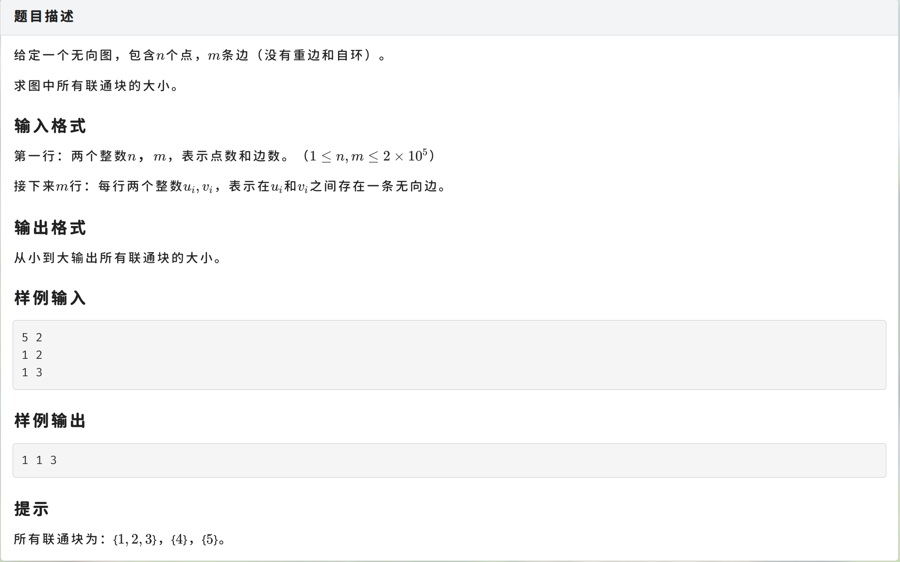
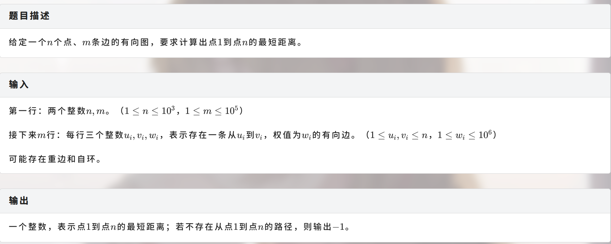

并查集 可以合并，可以查询联通关系的集合。
找根
1 2 3 4 int root (int x) if (pre[x] == x) return x;return root (pre[x]);
合并
1 2 3 void merge (int u, int v) root (u)] = root (v);
查询u,v是否联通
1 2 3 void query (int u, int v) root (u) == root (v);
路径压缩：
1 2 3 void root (u) root (pre[u]);
换根操作：按秩合并(小->大) 。

1 2 3 4 5 6 7 8 9 10 11 12 13 14 15 16 17 18 19 20 21 22 23 24 25 26 27 28 29 30 31 32 33 34 35 36 37 38 39 40 41 42 43 44 45 #include <algorithm> #include <iostream> #include <iterator> #include <vector> using namespace std;using ll = long long ;const int N = 2e5 + 10 ;int pre[N], cnt[N];int root (int x) return pre[x] = (pre[x] == x ? x : root (pre[x])); }void merge (int x, int y) root (x)] = root (y); }bool isCon (int x, int y) return root (x) == root (y); }int main () int n, m;for (int i = 1 ; i <= n; ++i) {for (int i = 1 ; i <= m; ++i) {int u, v;merge (u, v);for (int i = 1 ; i <= n; ++i) {root (i)]++;int > v;for (int i = 1 ; i <= n; ++i) {if (cnt[i])push_back (cnt[i]);sort (begin (v), end (v));for (auto &i : v) {' ' ;
Dijkstra单源最短路 单源：可以求任意一个点到某个点的最短路
graph LR
1-->|1|2
1-->|4|3
2-->|2|3
2-->|2|4
3-->|3|5
从1开始，数组d[i]存放1到i点距离的最小值。

1 2 3 4 5 6 7 8 9 10 11 12 13 14 15 16 17 18 19 20 21 22 23 24 25 26 27 28 29 30 31 32 33 34 35 36 37 38 39 40 41 42 43 44 45 46 47 #include <bitset> #include <iostream> #include <vector> #include <array> using namespace std;using ll = long long ;const int N = 1e3 + 5 ;struct Edge {int x, w;void dijkstra (int st) fill (0x3f );0 ;for (int i=1 ;i<=n;++i) {int u = 1 ;for (int j = 1 ; j <= n; ++j) {if (vis[u] || (!vis[j] && d[j] < d[u]))1 ; for (auto &[v, w] : g[u]) {if (!vis[v] && d[v] > d[u] + w)int main () for (ll i=1 ;i<=m;++i) {int u, v, w;if (u !=v) g[u].push_back ({v, w});dijkstra (1 );0x3f3f3f3f3f3f3f3f ? -1 : d[n]) << '\n' ;
最短路单调队列优化
1 2 3 4 5 6 7 8 9 10 11 12 13 14 15 16 17 18 19 20 21 22 23 24 25 26 27 28 29 30 31 32 33 34 35 36 37 38 39 40 41 42 43 44 45 46 47 48 49 50 51 52 53 54 55 56 57 58 #include <bitset> #include <iostream> #include <queue> #include <vector> #include <array> using namespace std;using ll = long long ;const int N = 1e3 + 5 ;struct Edge {bool operator <(const Edge &v) const {return w == v.w ? x < v.x: w > v.w;void dijkstra (int st) fill (0x3f3f3f3f3f3f3f3f );0 ;push ({st, d[st]});while (pq.size ()) {int x = pq.top ().x;pq.pop ();if (vis[x])continue ;1 ;for (auto &[y, w] : g[x]) {if (!vis[y] && d[y] > d[x] + w) {push ({y, d[y]});int main () for (ll i=1 ;i<=m;++i) {int u, v, w;if (u !=v) g[u].push_back ({v, w});dijkstra (1 );0x3f3f3f3f3f3f3f3f ? -1 : d[n]) << '\n' ;
Floyd多源最短路 graph LR
1-->|1|2
2-->|5|3
1-->|2|4
4-->|3|3
floyd由三重循环组成，第一层枚举中转点 ，第二层枚举入点 ，第三层枚举出点 。
graph LR
i-.->j
i-.->k
k-.-j
那么从i到j的最短距离
1 d[i] [j] =min (d[i] [j] , d[i] [k] +d[k] [j] )
1 2 3 4 5 6 7 8 9 10 11 12 13 14 15 16 17 18 19 20 21 22 23 24 25 26 27 28 29 30 31 32 33 34 35 36 37 38 39 #include <cstring> #include <iostream> #include <vector> #include <algorithm> using namespace std;using ll = long long ;const int N = 300 ;const ll inf = 4e18 , p = 998244353 ;int main () memset (d, 0x3f , sizeof d);for (int i=1 ;i<=m;++i) {min (d[u][v], w);for (int i=1 ;i<=n;++i) {0 ;for (int k = 1 ; k <= n; ++k) {for (int i = 1 ; i <= n; ++i) {for (int j = 1 ; j <= n; ++j) {min (d[i][j], d[i][k]+d[k][j]);while (q--) {int u, v;-1 : d[u][v]) << '\n' ;